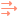

诊断#
诊断面板包含用于可视化模拟中各种元素的选项。这有助于理解并调整场景中的粒子、网格和力的行为。
 切换诊断设置面板，在视口右侧添加或移除此面板。
切换诊断设置面板，在视口右侧添加或移除此面板。
液体#
此选项卡用于可视化液体的不同属性。
 Liquid Mesh： 在视口中显示或隐藏液体网格。显示或隐藏诊断面板中的液体网格可视化设置。
Liquid Mesh： 在视口中显示或隐藏液体网格。显示或隐藏诊断面板中的液体网格可视化设置。Realistic：使用节点图中建立的标准着色。
Field Shading（场着色）：
- 使用非折射着色，并通过颜色显示特定液体属性。
Main Liquid：
- 显示主液体的信息。
Triangles：
清晰显示液体网格的所有多边形。
如果从目标摄像机距离看到了很大的三角形，可能需要降低 Voxel size 参数（位于
 Simulation 节点中）来提高网格分辨率，从而获得更细致、更平滑的液体网格。如果从目标摄像机距离看网格像彩色噪点，说明三角形非常小，可能需要增大体素大小以提升性能。
Simulation 节点中）来提高网格分辨率，从而获得更细致、更平滑的液体网格。如果从目标摄像机距离看网格像彩色噪点，说明三角形非常小，可能需要增大体素大小以提升性能。
Whitewater（白水）：
- 显示白水粒子的信息。
Trapped Air：
显示液体中哪些部分被视为受困空气（气泡可以在这些区域生成）。
受困空气以黄色表示，非受困空气则从青色过渡到紫色。
此可视化需要配合 Trapped air: Range 和 Trapped air: Max Depth 参数使用，它们位于 Source 选项卡中，属于
 Whitewater 节点，用于定义气泡可以生成的位置。
Wave Crests：
Whitewater 节点，用于定义气泡可以生成的位置。
Wave Crests：显示液体中哪些部分被视为波峰（泡沫粒子可以在这些区域生成）。
波峰以黄色表示，不被视为波峰的部分则从青色过渡到紫色。
此可视化需要配合 Wave crest: Range 参数使用，它位于 Source 选项卡中，属于
Whitewater 节点，用于定义泡沫可以生成的位置。
Show Normals： 显示每个顶点的法线指示线。颜色表示法线方向。
红色表示法线指向 X 或 -X 方向，绿色表示 Y 或 -Y，蓝色表示 Z 或 -Z。
轴向之间的方向会混合颜色。例如，指向 X 轴和 Z 轴之间的法线会显示为紫色。显示法线有助于查看网格的平滑程度或潜在问题。
- 例如，在调节 SDF smoothing 参数时很有用，该参数位于 Mesh 选项卡中，属于 Simulation 节点！
Size： 显示法线指示线的大小（长度）。
 Liquid Particles： 在视口中显示或隐藏液体粒子。显示或隐藏诊断面板中的液体粒子可视化设置。为了更清楚地查看粒子，可以关闭 Liquid Mesh。若要了解什么是液体粒子，请查看我们的 LiquiGen 模拟入门 部分！
Liquid Particles： 在视口中显示或隐藏液体粒子。显示或隐藏诊断面板中的液体粒子可视化设置。为了更清楚地查看粒子，可以关闭 Liquid Mesh。若要了解什么是液体粒子，请查看我们的 LiquiGen 模拟入门 部分！Sizing： Voxels 会将粒子渲染为带着色的球体，其大小基于体素大小。 Pixels 会将粒子渲染为无着色的方块，其大小基于显示器的像素大小。
Size： 显示视口中粒子的大小。使用 Voxels 作为大小模式时，3 表示一个粒子的宽度为 3 个体素。使用 Pixels 作为大小模式时，3 表示一个粒子的宽度为 3 个像素。
Realistic：
使用液体的 Albedo 颜色将粒子渲染为球体。
Field Shading（场着色）：
- 将粒子渲染为球体，并通过颜色显示特定粒子属性。
Unique ID：
颜色会根据粒子 ID 映射；粒子 ID 是粒子生成时分配给每个粒子的新的整数编号。
每个编号在每次模拟中只使用一次，因此死亡或排出的粒子在设置合适的重映射范围时仍会计入！
Velocity：
颜色会根据粒子速度映射。
Stickiness：
颜色会根据粒子的黏附性映射。黏附性通过 Stickiness 参数设置，该参数位于 Behaviour 选项卡中，属于
 Emitter 节点。
Emitter 节点。
Age：
颜色会根据粒子年龄映射。年龄从粒子生成的那一刻起按秒计数。作为参考，可以在时间轴编辑器中、帧计数旁边看到当前时间（秒）。秒数等于帧数（或模拟步数）除以步进率；步进率在 Simulation 选项卡中设置，属于
Simulation 节点。只有勾选 Simulate particle lifetime 参数时，此选项才可用；该参数位于 Lifetime 选项卡中，属于 Simulation 节点！
Viscosity（黏度）：
颜色会根据粒子的黏度映射。黏度通过 Dynamic viscosity coefficient（动态黏度系数） 参数设置，该参数位于 Behaviour 选项卡中，属于
Emitter 节点。只有勾选 Simulate viscosity（模拟黏度） 参数时，此选项才可用；该参数位于 Viscosity 选项卡中，属于 Simulation 节点！
Color Gradient 会根据所选 Field Shading（场着色） 方法（Unique ID、Velocity 或 Age）分配颜色值。颜色值从左侧低值映射到右侧高值。每种 Field Shading（场着色）方法都会保存自己的颜色渐变设置。关于如何使用颜色渐变，请查看我们的 Color: Gradient 部分！
Remap Range： 此范围滑块设置渐变颜色映射所使用的数值范围。为了获得信息量最高的结果，最小值保持为 0；最大值使用 Stats 面板（位于
 View 下拉菜单下）中的粒子数量来对应 Unique ID；对于 Velocity，使用最高粒子速度（m/s）；对于 Age，使用最高粒子年龄（秒）。关于如何使用范围滑块，请查看我们的 范围滑块 部分！
View 下拉菜单下）中的粒子数量来对应 Unique ID；对于 Velocity，使用最高粒子速度（m/s）；对于 Age，使用最高粒子年龄（秒）。关于如何使用范围滑块，请查看我们的 范围滑块 部分！
{kind=link}
模型#
此选项卡用于可视化导入的模型。
{kind=link}
力#
此选项卡用于可视化场景中由 
{kind=link}
“Forces”区段用于选择要显示的力。
“Transform”区段用于设置可视化框的尺寸和位置，力场速度会显示在该框中。
“View”区段用于设置箭头在可视化框中的放置方式。
“Arrow”区段用于设置箭头的显示方式。
Forces：
所有力的列表。从列表中选择一个力即可在视口中显示。多个力可以同时显示，并用箭头指示合成速度的方向。使用 Select All 复选框可以一次性选择或取消选择所有力。
 搜索框会过滤列表，只显示名称中包含搜索词的力。若要防止节点已断开连接或已禁用的力出现在可视化中，请启用 Ignore disabled forces 复选框。
搜索框会过滤列表，只显示名称中包含搜索词的力。若要防止节点已断开连接或已禁用的力出现在可视化中，请启用 Ignore disabled forces 复选框。
- View：
- Visual mode：
2D：一层箭头显示在一个平面（切片）上。由于箭头不会像 3D 网格中那样相互重叠，因此可以更清楚地可视化力。选择此模式后， Slice 参数会显示在诊断面板底部，用于指定平面的轴向和位置。
3D：箭头网格会在 3D 空间中按速度方向显示。这可以更清楚地可视化速度方向。
Sparsity： 可视化箭头的密度。 X1 表示每个体素都有一个箭头， X8 表示每 8 个体素有一个箭头。
Hide Empty： 如果勾选，箭头只会显示在模拟图块内。由于力场速度只显示在液体周围，因此可视化会更清晰。
- Arrow：
Type： 在以下两种类型之间选择： 由细线构成的 2D 箭头，以及
 由 3D 形状构成的 3D 箭头。后者会显示下方的 Thickness 参数。
由 3D 形状构成的 3D 箭头。后者会显示下方的 Thickness 参数。- Source： 箭头的颜色来源。
Constant：将所有箭头的颜色设为浅蓝色。
Direction：根据箭头方向设置箭头颜色。颜色会像色轮一样映射：X 轴为红色，Y 轴为绿色，-X 轴为青色，-Y 轴为洋红色；向上和向下则从 Z 轴的蓝色过渡到 -Z 轴的黄色。色相会在所有方向之间逐渐变化。
Value：根据用 Min/Max 参数设置的速度范围来设置箭头颜色：低力强度区域为蓝色，随后过渡到青色、黄色，高力强度区域为红色。
Normalize： 值为 1 时所有箭头大小相同；值为 0 时，会根据用 Min/Max 参数设置的速度范围缩放箭头。
Size： 设置箭头大小。值越高，箭头越大。
Thickness： 仅在使用
3D 箭头选项时显示。箭头的粗细。Min/Max： 设置用于映射箭头缩放和颜色的最小/最大速度。
- Transform：
Position： 可视化框在 3D 空间中的位置。
Size： 可视化框在三个轴向上的尺寸。
{kind=link}
- Slice： 当 Visual mode 设置为 2D 时，此区段会出现，用于指定可视化切片的轴向和位置。切片是包含箭头的透明灰色平面。
Slice Axis： 指定切片是否沿 X、Y 或 Z 轴定向。
Slice offset： 指定切片在力可视化框中的位置。0 表示切片轴负方向的最远端，1 表示切片轴正方向的最远端。
速度#
此选项卡用于可视化液体的速度。
- View： 设置箭头在场景中的放置方式。
- Visual type：
Field（场）：箭头放置在网格中。
Liquid Particles：箭头放置在液体粒子上。
Whitewater Particles（白水粒子）：箭头放置在白水粒子上。
- Visual mode：
2D：一层箭头显示在一个平面（切片）上。由于箭头不会像 3D 网格中那样相互重叠，因此可视化会更清晰。选择此模式后， Transform 和 Slice 区段会显示在诊断面板底部，用于指定平面的大小、轴向和位置。
3D：箭头网格会在 3D 空间中按速度方向显示。这可以更清楚地可视化速度方向。
Sparsity： 可视化箭头的密度。 X1 表示每个体素都有一个箭头， X8 表示每 8 个体素有一个箭头。使用 Liquid Particles 或 Whitewater Particles（白水粒子） 作为可视化类型时， X1 表示每个粒子都有一个箭头， X512 表示每 512 个粒子有一个箭头。
- Arrow：
Type： 在以下两种类型之间选择： 由细线构成的 2D 箭头，以及
由 3D 形状构成的 3D 箭头。后者会显示下方的 Thickness 参数。- Source： 箭头的颜色来源。
Constant：
将所有箭头的颜色设为浅蓝色。
Direction：
根据箭头方向设置箭头颜色。颜色会像色轮一样映射：X 轴为红色，Y 轴为绿色，-X 轴为青色，-Y 轴为洋红色；向上和向下则从 Z 轴的蓝色过渡到 -Z 轴的黄色。色相会在所有方向之间逐渐变化。
Value：
根据用 Min/Max 参数设置的速度范围来设置箭头颜色：低速度区域为蓝色，随后过渡到青色、黄色，高速度区域为红色。
Normalize： 值为 1 时所有箭头大小相同；值为 0 时，会根据用 Min/Max 参数设置的速度范围缩放箭头。
Size： 设置箭头大小。值越高，箭头越大。
Thickness： 仅在使用
3D 箭头选项时显示。箭头的粗细。Min/Max： 设置用于映射箭头缩放和颜色的最小/最大速度。
当 Visual mode 设置为 2D 时，以下区段会出现，用于指定可视化切片的轴向、大小和位置。切片是包含箭头的透明灰色平面。
- Transform：
Position： 可视化框在 3D 空间中的位置。
Size： 可视化框在三个轴向上的尺寸。
- Slice： 当 Visual mode 设置为 2D 时，此区段会出现，用于指定可视化切片的轴向和位置。切片是包含箭头的透明灰色平面。
Slice Axis： 指定切片是否沿 X、Y 或 Z 轴定向。
Slice offset： 指定切片在速度可视化框中的位置。0 表示切片轴负方向的最远端，1 表示切片轴正方向的最远端。
域#
此选项卡用于显示模拟发生的区域。
Bounding Box： 显示一个紫色线框框体，表示能包住所有活动体素的最小盒子。它类似于非稀疏求解器中的边界框，但这里的框体会根据模拟收缩和扩展，其中的空白空间不会占用计算资源。
- Tiles： 一个图块是 8 个体素见方的盒子。模拟在这些图块内进行。
Main Liquid： 以绿色线框框体显示液体粒子的模拟图块。
Whitewater（白水）： 以白色线框框体显示白水粒子的模拟图块。